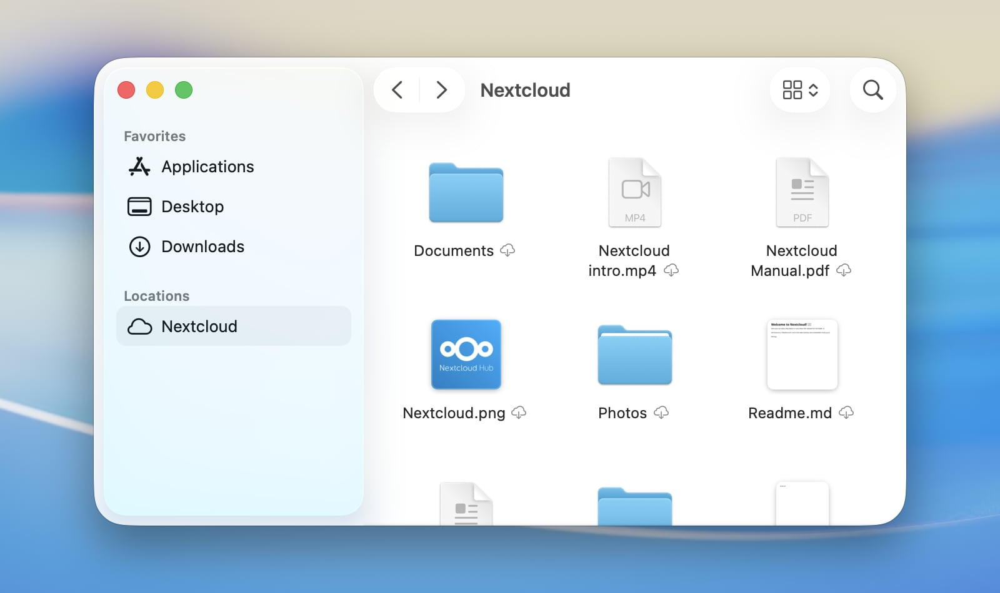
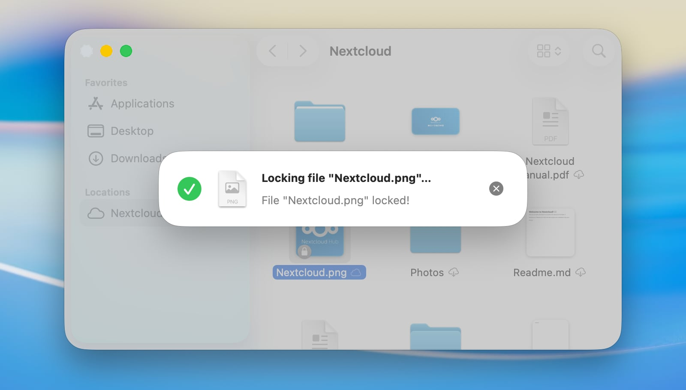

Using the macOS File Provider
On macOS, our client can also seamlessly integrate Nextcloud files into macOS as a File Provider extension. Any newly configured Nextcloud account will have the integration enabled by default.
Supported features
Keeping files or whole folders available offline
Freeing up local disk space by evicting local copies without deleting items
Intelligent and automatic local data eviction
File previews within Finder for files which are not downloaded yet
Support for Apple-specific formats, for example Pages, Numbers or Keynote bundles
Support for server-side file locking (if supported by the connected server)
“Edit locally” support
Sharing with other users
Server-side actions integrated directly in Finder's context menu
Automatic discovery of server-side changes
Configuration
Settings related to the File Provider extension can be adjusted on a per-account basis via the Nextcloud desktop client's settings window.

Here the integration into Finder can be enabled or disabled.
When disabling the File Provider extension while still having unsynchronized changes, macOS will save the unsynchronized items in a folder that is automatically revealed after the integration is disabled.
Finder integration
On macOS, remote storage like a Nextcloud files account appears like a dedicated location in the Finder sidebar. The actual location of the content on disk is defined by macOS.

備註
To accelerate server-side change detection, we recommend enabling the
notify_push app on your Nextcloud server. This app will notify
the desktop client of changes on the server as soon as they happen,
reducing the time it takes for changes to appear in Finder.
Otherwise the client needs to poll the server which will result in an
increased delay between a change on the server and its local visibility.
Sync status indicators
Similar to classic synchronization folders, Finder displays status indicators next to items. Unlike the custom indicators in classic synchronization folders, these standardized indicators are provided by macOS to ensure a consistent appearance across all cloud storage apps which a user may use on their system.
Cloud with downward arrow: The item and its descendants are not downloaded yet. They can be downloaded, assuming a network connection is available.
Outlined cloud: The item is not fully uploaded yet in its current local state.
Strikethrough cloud: The item is excluded from synchronization.
Pie chart: The item is currently being uploaded or downloaded, and the progress is visualized.
Filled circle with a pin: The item is available offline and will be kept locally.
No icon: The item is available offline and up to date.
Context menu actions

The File Provider extension also provides special Nextcloud features through the context menu in Finder.
Keep Downloaded
Files and folders can be marked to be kept downloaded and available offline permanently. If this is chosen on folders, it will also apply to all their contents. This is especially useful for users with limited or no network access, as it ensures that they can always access their important files without needing to worry about connectivity. macOS will not free up local disk space by evicting items which are marked to be kept downloaded, even if they have not been accessed for a long time.
This can be undone by selecting "Allow automatic freeing up space" on the same items.
To always keep everything in an account available locally, you can select "Always keep downloaded" on the location root in the Finder sidebar.
Locking

If the server supports file locking, the client will offer manual locking and unlocking of files in Finder.
File actions
If the server has apps installed which provide file actions for the selected file types, these actions will also be available in the context menu in Finder. This allows you to use server-side features of your Nextcloud instance directly from the Finder.
Known issues
macOS Extensions conflict
Due to technical limitations in macOS which are imposed by Apple, it is not possible to have the Finder integration for classic sync folders running in parallel to an enabled File Provider extension. This means that item decorations and context menu options will be unavailable for classic sync folders while the File Provider extension is enabled.
Alias files
When opening a macOS alias file stored on Nextcloud for the first time on a device where it has not yet been downloaded, the file may open as a binary document in a text editor instead of jumping to its target. This happens because macOS decides how to open a file before downloading it, and alias files carry no recognisable file extension or type information on the server — the only way to identify them is by reading their content. Once the file has been opened or downloaded once, Nextcloud Desktop learns that it is an alias and stores that information locally, so all subsequent opens will work correctly. To avoid the issue entirely, right-click the alias file in Finder and choose Keep Downloaded before opening it for the first time.
Troubleshooting
Debug-level Logging
Debug-level log entries for the File Provider extension are disabled by default. If you want to report an issue with the File Provider, it can be helpful to enable them to get more detailed information about what is happening under the hood. To enable them, you have to issue the following command in Terminal:
defaults write com.nextcloud.desktopclient.FileProviderExt debugLoggingEnabled -bool YES
The change takes effect within a couple of seconds; no restart of the extension or the Mac is required. It is recommended to restore the default value by deleting the explicit value after you have resolved the problem you were investigating:
defaults delete com.nextcloud.desktopclient.FileProviderExt debugLoggingEnabled